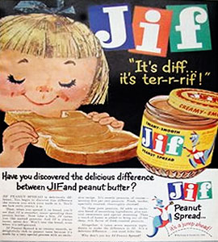
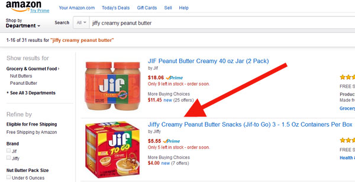
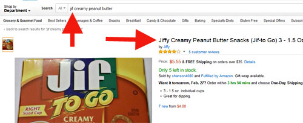
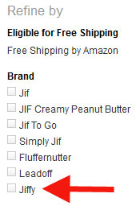
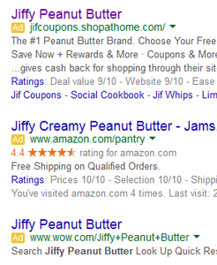

Do you recall Jif peanut butter launching as “Jiffy”? Apparently, this alternate memory is fairly widespread.
Discussing the history of peanut butter, PeanutButterLovers.com insists:
“1955: Procter & Gamble entered the peanut butter business,
introduced Jif in 1958. Now owned by the J.M. Smucker Company, Jif
operates the world’s largest peanut butter plant, producing 250,000 jars
every day!”
I was raised with another brand of peanut butter, so I can’t be confident my “Jif v. Jiffy” memories are accurate. However, many readers clearly recall “Jiffy” as the original brand name.
(And, before anyone insists people are mixing it up with Skippy: I’m pretty sure the advertising has always made the difference clear.)
Here are some of the many comments about this topic.
On 23 Jan 15, Rick asked:
Does anyone else have a memory of the peanut butter brand Jif previously being called Jiffy? I recall having seen this change somewhere around the age of 10 (1989), and it sticks with me because even at that young age I actually considered that I may have jumped to a parallel universe. However part of the memory I’m not as sure of is discovering that it was in fact a name change by the company. At least this is what I’ve always thought until finding this website caused me to look that fact up. It seems that at least in this reality there was never a name change and it has always been Jif.
On 24 Jan, Chris said:
I have goosebumps about this one. I always remember it as “Jiffy” and commercials when I was young about how moms could whip up a sandwich “in a Jiffy.”
After Googling it, we aren’t the only ones who remember it as Jiffy.
Julia said:
Yes, I do remember. I was absolutely 100% sure it was Jiffy when I read your comments. Then I started questioning myself a little. I was born in 1964. My mom is pretty “brand loyal” and always had peanut butter in the house and it was always Jiffy, not Peanut Pan or Skippy. I had so many peanut butter sandwiches as a kid (no jelly, just PB) that I don’t even buy peanut butter now. I do have a vague memory of hearing/seeing “Jif” on a commercial and wondering why they had abbreviated it. I’m questioning myself because I read someone else’s comments on this on line and they mentioned “Jiffy Pop Popcorn” which we also had as a treat sometimes. Even though I am familiar with the company slogan, “Choosy moms choose Jif”, perhaps at one time they said, “Choosy moms choose Jiffy.” Jif on the bottle looks funny but more convincing to me is just the “sound memory” of the name “Jiffy” as a kid. I can’t be as sure of this alternate memory as I am of a few of my others, but I figure if the other changes are possible, this might be too.
Piper asked:
At first glance I too thought it was called Jiffy as well, but after thinking about it I wonder if we are perhaps mixing up Jif peanut butter with Jiffy Pop popcorn?
In February 2015, deanna said:
yes ,not only do i remember “jiffy” being on the peanut butter label yet i remember the commercial said “choosey moms choose jif”
Julia did some research and reported:
I found some new information on the Jiffy / Jif peanut butter question. The man who created what is now called Jif Peanut Butter was William T. Young, who was from Lexington, Kentucky. He also bred horses , or at least he did after Jiffy Peanut Butter and other business ventures made him very rich. I found this out in a kind of backward way. I googled “Jiffy Peanut Butter” and came across a reference to a horse of the same name. Here is the horse’s pedigree.
http://www.allbreedpedigree.com/jiffy+peanut+butter
I wondered who would own a horse with the name Jiffy Peanut Butter and I’m going to make a leap and say it was most likely Mr. Young, or someone familiar to him. If you look up William T. Young on Wikipedia, it says that he created W. T. Young Foods, which developed “Big Top” brand peanut butter, which was sold to Proctor & Gamble in 1955, and became Jif. However I found this link which shows a page from “Gambling in America, An Encyclopedia of History, Issues and Society.” I don’t know when the book was published, but from the text, it was before Young’s death in 2004. And it clearly states on page 209, that Young made a fortune developing, “JIFFY Peanut Butter.”
[Edited link: https://books.google.com/books?id=QAI9BgAAQBAJ&pg=PA209&lpg=PA209#v=onepage&q&f=false The book says: “Lexington, Kentucky, native William T. Young made a fortune developing Jiffy Peanut Butter and selling the brand to Procter and Gamble.” ]
…The name “Jif” on the label just looks weird and truncated to me, but none of my family remembered it being Jiffy. When I first noticed it, I thought it must be a name change, but supposedly not. But since there is evidence of “Jiffy Peanut Butter” having existed, it either really was changed, or there is “bleed-in” from the another reality…
dani feist said:
JifFY peanut butter.
Daniel said:
I remember Jiffy and spouse as well but the spouse says it was a brand name change….?
Julia went the extra mile:
Fiona, Daniel and all ME friends,
A few days ago I found Jif’s website and used their email to send a question. I said I clearly remembered the peanut butter being called Jiffy etc. and even gave the information I had found written regarding Jif’s creator, Williams T. Young (not that I expected them to respond to that) and they actually wrote back and said,
“Thank you for contacting The J.M. Smucker Company regarding Jif® Peanut Butter. We appreciate your interest in our Company and products. In response to your inquiry, the name Jif® was chosen because it was easy to say, spell and remember. This is the only name we have used. It was nationally launched in the late 50’s as Jif®.”
(Smuckers bought Jif from Procter and Gamble, fyi.)
That gave me a great starting point for my own research.
Many sites that reference William T. Young also seem to talk about his brand as either Jiffy or Jif. However, Young’s biography at Overbrook Farm says, “Young returned to Lexington… and started a peanut butter company. Big Top peanut butter later became Jif after Young sold W. T. Young Foods to Procter & Gamble in 1955.”
So, according to his business, Young’s peanut butter became Jif after he sold the company.
(That doesn’t match the Sigma Alpha Epsilon website, which lists their late member as “William T. Young – Businessman, Founder and former CEO of JIF peanut butter, University of Kentucky.” However, that’s a different conflict: whether the company was JIF or Big Top or William T. Young Foods.)
Returning to the Jiffy question, the Bright Side of the News article (at the Wayback Machine) says about Steve Wilhite, inventor of the GIF, and how he pronounces that acronym:
Wilhite prefers the sound of JIF, as in Jiffy Peanut Butter which has been rumored to be a staple in a programmer’s diet.
Even Amazon allows the “Jiffy” name in some of their Jif listings… which may only suggest that a lot of people type in “Jiffy” instead of the actual brand name.

I tested this just entering “jif creamy peanut butter” in the search form, and it still came up as “Jiffy.” (However, that listing was created by a “Fulfilled by Amazon” seller, not Amazon itself. Clever marketing by that FBA seller!)


Also, Amazon lists “Jiffy” as a brand name (see screenshot on the right), but if you’re at Amazon and click on that link, it only returns the listing shown immediately above.The Amazon listings only reinforce the confusion about the product name.
Still, it surprised me to see “Jiffy” in such popular use for Jif products.
Google ads confirm that by making use of the brand name “Jiffy.” (Any advertiser can choose search terms like this.)

However,the book Julia found isn’t the only reference in print using the “Jiffy” peanut butter brand name.
In a May 1996 article, Sports of The Times;Lukas Lives The Life Of Riley, The New York Times reporter Harvey Araton said about Jif’s creator, William T. Young:
Alongside the gracious but taciturn Young, Lukas lit up the winner’s circle. The owner’s claim to fame is having created Jiffy peanut butter.
That’s odd. Did the NY Times not fact-check? While errors do slip past them, now and then, most proofreaders would have caught the Jif/Jiffy transposition, unless the proofreader also thought it was Jiffy.
So, this is a quirky topic. I’m wondering if — as with the TAPS v. Ghost Hunters issue — we can’t be sure if it’s a Mandela Effect issue, or an early media error that was repeated and amplified by the audience.
I did a Google Image Search looking for any ad or product package for “Jiffy” peanut butter, and — so far — I can’t find one.
If you clearly recall the product label as “Jiffy,” or if you have other insights about this topic, I hope you’ll leave a comment.
Does anyone else have a memory of the peanut butter brand Jif previously being called Jiffy? I recall having seen this change somewhere around the age of 10 (1989), and it sticks with me because even at that young age I actually considered that I may have jumped to a parallel universe. However part of the memory I’m not as sure of is discovering that it was in fact a name change by the company. At least this is what I’ve always thought until finding this website caused me to look that fact up. It seems that at least in this reality there was never a name change and it has always been Jif.
I have goosebumps about this one. I always remember it as “Jiffy” and commercials when I was young about how moms could whip up a sandwich “in a Jiffy.”
After Googling it, we aren’t the only ones who remember it as Jiffy.
Yes, I do remember. I was absolutely 100% sure it was Jiffy when I read your comments. Then I started questioning myself a little. I was born in 1964. My mom is pretty “brand loyal” and always had peanut butter in the house and it was always Jiffy, not Peanut Pan or Skippy. I had so many peanut butter sandwiches as a kid (no jelly, just PB) that I I don’t even buy peanut butter now. I do have a vague memory of hearing/seeing “Jif” on a commercial and wondering why they had abbreviated it. I’m questioning myself because I read someone else’s comments on this on line and they mentioned “Jiffy Pop Popcorn” which we also had as a treat sometimes. Even though I am familiar with the company slogan, “Choosy moms choose Jif”, perhaps at one time they said, “Choosy moms choose Jiffy.” Jif on the bottle looks funny but more convincing to me is just the “sound memory” of the name “Jiffy” as a kid. I can’t be as sure of this alternate memory as I am of a few of my others, but I figure if the other changes are possible, this might be too.
Update to my last comment. I just googled “Jiffy peanut butter” and can find many many entries referring to it as Jiffy.
At first glance I too thought it was called Jiffy as well, but after thinking about it I wonder if we are perhaps mixing up Jif peanut butter with Jiffy Pop popcorn?
http://allanpeters.com/wp-content/uploads/jif_four.jpg
Choosy rhymes with jiffy (a close rhyme), it’s more catchy so it makes since that a company logo maker would compose a saying that says, “choosy moms choose jiffy” not “choosy moms choose jiff!” Even if it is supposed to be jiff it’s not a logical choice based on what we now know about the science of advertising and using nmeumonics to create good jingles. It should be jiffy no matter what universe you’re in!
I’ll counter that with the fact that the slogan echoes “choose.” In that era, it would have been enough to deem it a good ad slogan, and — in the later 1960s — maybe even better than something “cute” (rhyming). (Remember, in that era, being cool trumped being cute.) But, either way, I agree: Choosy/Jiffy are close enough to rhyming to add extra selling power to the Jiffy version of the slogan.
yes ,not only do i remember “jiffy” being on the peanut butter label yet i remember the commercial said “choosey moms choose jif”,and i am totally freaked out that loui anderson is still alive?? and yes ,it was always the bernstein bears to me yet seeing the cursive writing as “berenstain” looks so correct? then the whole movie thing I have noticed the most is that older movies always had bright blue skies and cartoons NEVER had chemtrails in the background ,yet even on my old VHS tapes they all have chemtrailed skies ,even the movies from the 1970’s? i am wondering if that is why so many people disbelieve that our skies have changed ,that some of us came from a dimension or parralel that never had chemtrailing and here in this dimension its been going on forever.watched a series called “fringe” a while back where the alternate universe had blimps ,and now in this universe we have JLENS blimps up in the skies in maryland,washington DC,and virginia…i dont know,i am so creeped out anymore. have felt this techno creepyness here since about 2011 ,so to those who have similar memories: HOW DO WE GET BACK TO OUR OWN UNIVERSE?? EVEN NATURE FEELS FAKE HERE?
I remember Jiffy and spouse as well but the spouse says it was a brand name change….?
Fiona, Daniel and all ME friends,
A few days ago I found Jif’s website and used their email to send a question. I said I clearly remembered the peanut butter being called Jiffy etc. and even gave the information I had found written regarding Jif’s creator, Williams T. Young (not that I expected them to respond to that) and they actually wrote back and said,
“Thank you for contacting The J.M. Smucker Company regarding Jif® Peanut Butter. We appreciate your interest in our Company and products. In response to your inquiry, the name Jif® was chosen because it was easy to say, spell and remember. This is the only name we have used. It was nationally launched in the late 50’s as Jif®.”
(Smuckers bought Jif from Procter and Gamble, fyi.)
Anyway, my, my, my…
Julia,
Thanks SO much for taking the time to research this and for contacting Smucker/Jif’s office to get their answer.
(I’ll admit that I’d always thought the name was Smuckers, but now I realize it’s always been Smucker‘s. That isn’t Mandela Effect, it’s the product of their commercials, hearing, “With a name like Smucker’s, it’s got to be good.” And, their domain name is Smuckers.com, which reinforces it.)
This is a very curious one. I’m going to turn it into an article, since the Jiffy name appears in places — like the NY Times — that I’d expect to fact-check what they publish.
Thanks again!
Cheerfully,
Fiona
You’re welcome, Fiona. I like the article and the additional info you included. You work fast!
I found some new information on the Jiffy / Jif peanut butter question. The man who created what is now called Jif Peanut Butter was William T. Young, who was from Lexington, Kentucky. He also bred horses , or at least he did after Jiffy Peanut Butter and other business ventures made him very rich. I found this out in a kind of backward way. I googled “Jiffy Peanut Butter” and came across a reference to a horse of the same name. Here is the horse’s pedigree.
http://www.allbreedpedigree.com/jiffy+peanut+butter
I wondered who would own a horse with the name Jiffy Peanut Butter and I’m going to make a leap and say it was most likely Mr. Young, or someone familiar to him. If you look up William T. Young on Wikipedia, it says that he created W. T. Young Foods, which developed “Big Top” brand peanut butter, which was sold to Proctor & Gamble in 1955, and became Jif. However I found this link which shows a page from “Gambling in America, An Encyclopedia of History, Issues and Society.” I don’t know when the book was published, but from the text, it was before Young’s death in 2004. And it clearly states on page 209, that Young made a fortune developing, “JIFFY Peanut Butter.”
Geez, I just tried to copy and past the link in. Not sure this will work, but a google search will bring it up too. The name “Jif” on the label just looks weird and truncated to me, but none of my family remembered it being Jiffy. When I first noticed it, I thought it must be a name change, but supposedly not. But since there is evidence of “Jiffy Peanut Butter” having existed, it either really was changed, or there is “bleed-in” from the another reality…
https://books.google.com/books?id=QAI9BgAAQBAJ&pg=PA209&lpg=PA209&dq=William+T+Young++Jiffy+Peanut+Butter&source=bl&ots=DDNXE7RZgl&sig=z3xnVUE_Yz8i4urocJWjLqsyp9s&hl=en&sa=X&ei=Ue_mVI6fGsmfNszEgkA&ved=0CCcQ6AEwAQ#v=onepage&q=William%20T%20Young%20%20Jiffy%20Peanut%20Butter&f=false
I always remember it being called jiffy and when I noticed the name was jif few years back I just thought the company changed the name. thought no more about it until now and discovering how crazy life can actually be, I mean it was Gordon’s fish sticks not Gorton’s. I know that Jane Goodall died for a fact I worked at news paper printer at the time, and I also remember the TV show full house the twin girls were both in the show and Jesse called them twins and girls in the show and when I was a kid. the Berenstien Bears was not Berenstain I clearly remember the books, what is going on are people messing with time and why do only some people remember these details? I afraid that I going to wake up one day and find more things have changed in life, very very freaky
Yes Jiffy with capital letters. JIFFY and it competed with Skippy. I know much later there was a oil change lube place called Jiffy lube. Its like obvious to me that JIFFY was a cool name but JIF ? Is it an acronym? I remember they were a brand my family didn’t like and they would say ew no JIFFY, same thing with Skippy. No one like them. Those were the brand my mother usually stayed away from. JIFFY sounds so much better then JIF and its sounds like you might get gypt or jipt you know get ripped off or swindled.
I remember a commercial that made the sandwich in a “jiffy” with Jiffy peanutbutter.
Pardon me as I psychologize myself for a second. When I think Jiffy Peanut Butter, I flash back to Annette Funicello doing peanut butter commercials. Going through Youtube, She actually did Skippy commercials not Jif ones. Maybe…just maybe… the memory part of my brain created an amalgam of peanut butter brands in my childhood and Jif and Skippy became Jiffy in my head. I know I’m not special in any way so if millions of people around my age were exposed to both these brands and we have traumatic experiences that jumble up our memories a little, I can expect at least 1% of the population to remember Jiffy. Out of a million is 10,000 people. 250 million people in the US would make that number 2.5 million people. That’s a lot of people with scrambled memories. I also tend to have vivid dreams, so mix that into my memory bank and I have a matrix like existence anyways.
Another uninteresting idea could be that they actually DID have JIFFY early on. There might have been a trademark or patent dispute with another company and they quickly pulled everything off the shelves and wiped out any trace of it. there might be a trace of it still but its really really hard to find.
I don’t mean to sound like a skeptic but I have been 100% positive about things that didn’t necessarily pan out as true and later on I realize how I came to those conclusions
Kirk, I appreciate your healthy skepticism. Your comment made me rush to Google, because I clearly remember Ms. Funicello saying, “Choosy moms choose Jif.” I’m not the only one, because — on several obituary-type webpages — others mentioned happy memories of her making that commercial. (Ref. http://www.tv.com/lists/TimSpot:news:136544201024/comment/IndianaMom:comment:48860ed0-4f32-1554-a0c6-2572ef5ddfb2 < -- Warning, that webpage has many slow-loading ads.) Nevertheless, you're right about all evidence pointing to Skippy, not Jif, as her commercial connection. (Ref. http://adage.com/article/agency-news/rewind-actress-annette-funicello-starred-ads-skippy/240771/ )
I think I noticed this change sometime after 2001 but before 2010. Granted we were strictly a Skippy family growing up, but I’m an artist and logo design is something that really sticks with me, as I’ve also developed some logos. I was watching TV when I noticed the change. I distinctly remember a commercial where the commentator said, “Choosy moms choose Jif.” I nonchalantly replied back to the TV, “Yeah, except it’s called Jiffy.” The next time I went grocery shopping I looked, and was floored to see all of the Jif peanut butter. It looked so strange, because I distinctly remember in the Jiffy universe the 5 letters in white with 5 colored stripes behind the letters – I remember 2 of the colors repeated – so 3 colors were used: red, blue, green. I also remember thinking it was a little unusual the way they repeated the colors in the Jiffy universe, I would have used a ABCBA pattern, but Jiffy used a ABCAB pattern. Unfortunately I cannot recall the exact order of the colors – but I remember Jif looking to foreign to me – and too short visually. I also remember commercials from years ago about “fixing sandwiches in a Jiffy.”
when i was really little, i was always confused that it was “jif” and not “jiffy”
I always remember it being Jif. But it’s kind of interesting, depending on whether you believe the NME is real and what theory you use; it seems that people carry over their memories and then you find threads like this one where people are genuinely confused when they see the “official name”. If you’re from the “Jiffy” world, and you work for the NY Times, you wouldn’t give the name a second look even though it is wrong in “this world”.
Like Rick in the first comment, I seem to remember this change in the late ’80s, early ’90s. I always assumed that they had abbreviated the name to make it “cooler.”
When I was a kid in the 80s, I recall the jar saying Jiffy. I dont remember any commercials for it. And I had a moment in the past where I saw it on a store shelf and said to myself “Jif ? When did they change the name?”
I also messaged this site saying I remember it as Jiffy when I was young before this article was published and without any googling of the subject.
I remember it being call Jiffy, as well. About five years ago is when I first noticed it’s just Jif…. I assumed the name had just been changed. I suppose it’s possible that I am confusing it with Skippy…. I just don’t know what’s real anymore.
Yes! I worked at a grocery store after graduating high school in the mid 90’s. That’s when I first noticed the name had been shortened. But in my childhood memories, it was Jiffy.
I also remember Mrs Buttersworth syrup, but the label actually says Mrs Butterworth’s. So maybe I’m just remembering everything wrong…
Michelle,
I didn’t have a clear memory of Mrs. Butterworth/Butterworth’s, so I did some research. First, I checked Google Image Search to see what the earliest images looked like. All I found were labels saying “Mrs. Butterworth’s.”
Then, I searched for the product’s history, figuring I’d find the original name of the product, who first produced it, and so on.
I didn’t. The product (as “Mrs. Butterworth’s”) was available from 1961 (first TV commercial) and perhaps earlier. No date of origin. Very odd.
A 2009 Daily News article reported the brand name’s 40th anniversary, but that would mean the product launched in 1969. (2009 – 40 = 1969 ) A 2010 BrandChannel.com article [link not working at the moment] was closer to truth, saying “for nearly 50 years.”
The company’s main website is more vague about the product’s history, saying “…for over 50 years.” (2015 – 50 = 1965)
Compared with most products’ histories, that’s unusual. For example, their Nalley brand proudly states “Fine foods since 1915.”
So, it’s possible the original product had a different name. But, since you graduated high school in the mid-1990s, I’m not sure you’d have any reason to recall a pre-1961 brand name, if it were different. Not unless a family member collects old bottles or you had some other reason to see an early version of Mrs. Butterworth’s displayed.
However, this was a fun search. I never knew that folk artists use the bottles for artwork. http://www.davidtucker.me/paint-it-black/mrs-butterworth and https://www.pinterest.com/adastra62/mrs-butterworth-folk-art/ Kind of a cool discovery.
But, yes, going back to TV commercials in 1962 (ref: http://www.mrsbutterworths.com/about-us/ ), it looks like it’s always been Mrs. Butterworth’s… in this timestream, anyway. Also, Pinnacle — the company that owns the brand now — produces Aunt Jemima and Log Cabin products, as well.
Compared with other brand names I’ve researched, Mrs. Butterworth’s history is very sparsely documented. That’s so unusual among products of similar vintage, I’m still trying to figure out why.
Cheerfully,
Fiona
Fiona,
Thanks so much for looking that up. It is interesting about the lack of agreement on the history of Mrs B. I’ll have to look into it more.
Googling it the way I remember, it seems that lots of people call it the wrong name too. Must be a common mispronunciation. Like Jim Beam and Jim Bean, Barbra Streisand and Barbara Streisand, etc.
Love your website btw. I’m totally mind blown, because I do share most of the memories here. It’s just spooky.
I remember Jiffy peanut butter. I still call it that.
Really dig your writing style. Regarding the peanut butter situation, they both sound right. But if I’m being choosy, I’d choose Jif.
Location: USA. Timeframe: 86-89
Jiffy. In big honking jars. The color scheme was red/yellow. They were at a grocery/chain that does exist anymore. My mother always went there. All I will say is that place had major-freaky vibes going on.
That place still gives me major-freaky vibes in 2015 just loosely associating memories with that store. The shopping carts were different from the other carts at different chains in the same location/time period. I remember because the Jiffy was head level with me in the cart!
The bread brands/taste was completely different from other stores and was down the aisle from the Jiffy on the same side. I don’t know if anyone even remembers that store. All I know is, my Dad refused to step inside.
I was pretty sure the Jiffy jars didn’t have four colors like the Jif jars do now – yellow, red, green and blue but couldn’t picture exactly what they looked like, other than they definitely didn’t have both green and blue. Yellow and red sounds right and pretty typical for attention-getting.
Do you remember the name of the chain of stores? If not, would someone else in your family remember them?
Hi, I’m the one who posted the original Jiffy comment back in January. I just wanted to say I’m amazed at the response this got. I’d like to thank everyone who took the time to do some serious research on this subject. I learned quite a bit that I had not turned up in my own searches. I’d also like to thank you Fiona for a great article and for this website most of all. It is truly gratifying to know there are so many others who have shared in these strange experiences. Hopefully by sharing our stories we can eventually come across something that may approach an answer.
I remember it as Jiffy when I was a kid. I remember thinking they had shortened the name sometime in the late 90’s or early 2000’s. How weird it was never called that because I vividly remember it as Jiffy.
I believe the confusion is due to the fact we grew up with “Jiffy Pop”, the popcorn that swelled within a foil-covered pan. So yes, we clearly recall the brand name “Jiffy”, but we have to accept that it’s possible we’re confusing two different brand names: Jif (peanut butter), and Jiffy Pop (popcorn).
“Guest” from Virginia (USA),
I’m approving this only because — in the “Jiffy peanut butter” reality — Jiffy popcorn might have been a related product, with “Jiffy” as the main brand name for both products.
However, this is also the kind of comment I rarely approve because — if you’ve read my policies-related comments — you’d know that telling us we’re just confused about something is rather insulting, and telling us “we have to accept” the “confusion” explanation is unacceptable at this website.
We don’t have to accept anything. That’s the point of this website: We’ve assumed that we’d misremembered or confused something in history, and it’s startling (and kind of cool, if not an outright relief) to discover that many others share similar or even identical alternate memories.
Still, the concept of a major brand name called “Jiffy” (for multiple products) has some resonance. That’s why I’m approving this comment, with some uneasiness.
Let’s drop the “confusion” part of that comment, and see if anyone recalls both products — the peanut butter and popcorn — being related, in another timestream.
Sincerely,
Fiona Broome
i was born in the earl 80’s and never heard of jiffy popcorn. I do rember Jiffy peanut butte. I do remeber hearing stories at my grandmohters house and later from my uncle poping pop corn on the stove with an alumiun foil that would bubble up. They told these stories to teach us kids how they didnt have popcorn machines like people were using at the time. These popcorn machines were later put away when they were later replaced by popcorn in microwaveable bags. I think at that time to probably someone told us a story of how they used to popcorn on the stove.
Jiffy for me. Damn.
I recall drinking Nestlé quik through my childhood. But for some reason it is called a different name. Nesquick.
Nestlé Quik still exists, or did anyway. Lots of images on Google. I used to love the strawberry one.
It’s Jif?? I don’t eat peanut butter. It’s been a long time since I bought any for my daughter, who is 18. I would normally buy some generic crunchy brand for her, so I wasn’t really looking at all of the jars. But I swear if I have ever seen it is was Jiffy in a store or in someone else’s home.
I clearly remember the jars saying “Jiffy” because that’s how I learned to spell my brother’s name. “Jeffy like the peanut butter, but with an e”. I remember teasing him and calling it “Jeffy peanut butter”. Because it made him mad. This was 1998-2002. I remember being very surprised when I looked in our cabinet around 2006 and found JIF peanut butter. My mom insists it’s always been JIF, but I know for a fact we had Jiffy.
Thanks, Rose! I love hearing about memories like yours, because the anecdotal support is so strong.
I am NOT from the Jiffy timeline. I remember it being Jif because my dad’s name is Jeff and I always associated the two. Plus we often had Jiffy popcorn and Jiffy baking mixes and I didn’t make the same association with my dad’s name.
Please take this in the spirit that it’s intended– that my memory matches this reality. I’m definitely not trying to offer an explanation for the Jiffy Peanut Butter memory. I’m commenting because the memory is contextual for me, much in the way my ME memories are.
Emby, if I approved all comments that said anything like “no, my memory is [something that matches this timestream],” these comment threads would be 5x longer. We already know what’s in this timestream.
For example, I delete several comments daily where each one says, “No, you’re wrong. In my lifetime, the USA has always had 50 states.”
I understand that many of those commenters think they’re being helpful, and I appreciate the spirit of those comments, but I can’t approve them unless they contribute something new and useful to the discussion.
Likewise, I don’t approve most comments that say something like “you’re mixing up Nelson Mandela and Steve Biko because both were black and both were anti-apartheid activists in South Africa.”
When people discover an alternate memory, many will first check the Internet and friends asking, “What did I mix up, back then…?” By the time they comment here, they’ve already considered a past misunderstanding, erroneous media report, and so on… and ruled that out.
If you comment in a thread where your memory somewhat matches the alternate memories posted and in that thread you also mention some memories that do match this timestream, that’s useful.
For example, if you were to say — at the Berenstein Bears post — “I remember Berenstein Bears and chartreuse as a purplish red, but here in San Diego, I’m pretty sure Jif peanut butter was always Jif, not Jiffy,” that’s useful. It would be added to the thread.
Otherwise, if something is redundant or sounds patronizing, I won’t approve it.
I hope you see the distinction.
Sincerely,
Fiona Broome
Is it weird that I remember BOTH??
I remember always thinking to myself “Now, that’s funny to have two peanut butter companies named so similar.”
I have tried both.
Jiffy AND Jif.
However, going back to search, there seems only to be Jif.
What the heck.
(also, berenstein, MLK handgun)
I wasn’t going to comment until I saw this one. I thought I remembered there being both, and thinking that they were too similar sounding and that seemed dumb to me. I also remember them being the Berenstein Bears, and I also am 99.9 % positive I remember Darth Vader saying, “No Luke, I am your father.”
I remember calling it both too. It was interchangeable for me, like I would call it either jif or jiffy, the jar may have said jif, but I knew it as jiffy too, and didnt think anything of it. I knew it as both.
also, here’s a link to a recipe using peanut butter. in the comments, two women are discussing using “jiffy”
http://www.seededatthetable.com/2011/12/23/peanut-butter-fudge/
I remember it was always called “JIF”, but as kids we referred to it as “Jiffy”. In our family, nearly everyone’s name was one which could have the “Y” added to the end — our grandmother only called me Paulie, brother Eddie, etc. so things we loved always got the “Y” added to the end.
I ran across this on p. 5 of “Full Bloom” by Janet Evanovich.
“Annie hadn’t felt passionate about anything since Jiffy Peanut Butter came out with a reduced-fat variety.”
Personally, I only remember “Jif”, but I thought this was interesting.
I am also, still definitely sure it was Jiffy and not that I think about it, after somone else’s post. I do remember what the jar looked like now, it was red, yellow and blue, with Jiffy in bold letters. No green on the label. I know some have posted that it changed around the 1990’s, the more I remember I haven’t since Jiffy with the original colored label, since the late 1970’s or early 1980’s. I remember Nelson Mandela, died in prison in the 1980’s and I was taught in school that Fidel Castro was assassinated in the 1960’s also that there was 52 United States, in the reality I came from. I think this alternate timeline has to do with the sudden boost and change in technology, that we have been exposed to continually since the start of the 1980’s. If you remember from the Jiffy timeline, once 1980 hit, it seemed we lived in a different world, music, clothes and people were extremely different very quickly, it wasn’t a gradual change, like you saw in the decades before and once 1990 hit, another change in reality hit and it was if the 1980’s never exsisted, everything seemed old from then and odd. My belief is that these reality shifts were experiencing, have to do with increased exposure to technology, just a theory of mine. It happened to me again, my reality shifted I believe around 2008, because continous traumatic events. I remember waking up one mourning and I didn’t recognize the body I was in or who I was or where I was. I got out of bed and went to my son’s room and stared at him and was not really sure who he was and he said I asked him “what I am doing here,” and I went back to bed. I woke up some time later, fine. I do remeber the sun use to be brighter before than and the sky very blue looking. So, I am assuming, my brain shifted it’s reality to somewhere else, to stop the events that were happening, because of stress trauma related issues, because of all the problems I was suddenly having. After that day, those terrible events that kept happening, suddenly stopped. I remember being very scared all the time before because I felt like I was not really suppose to be where I was and that is why these bad things kept happening. When my reality shifted, some of my memeories were gone, that were prior to 2008. Everything, seemed different and even family seemed not the same people I knew from before, I was different some how and still am.
I was born in 1988 and remember it being called Jiffy and the jar was red and yellow. BUT I also remember Jif coexisting with Jiffy…. Jiffy was red and yellow and JIF was blue and green. I also remember the tank guy dying as I remember a clip of it being used in a Michael Jackson video (Man in the Mirror I believe). AND I remember it always being BerenSTAIN Bears.
It has always been Jiffy in my memory. I’ve never seen Jif before until now. It’s a little unsettling.
I also recall it as Jiffy. About a year ago I had ask my husband to stop and pick up some peanut butter. Once he was at the store he called to ask what brand I wanted. I said, “Jiffy of course.” The line was quiet for a few moments while he looked until finally asking “Do you mean Jif?” We bickered back and forth about it for a few minutes as I was sure he was over looking it. Finally I stated just get the Jif. After he was home I googled Jiffy peanut butter so I could show him it did exist but could only find photos of Jif. Was so happy to find I am not alone out there with these memories. I do however remember the commercial ‘Choosey mom’s choose Jiff.’ So confusing.
Guys – – my friend and I have been discussing the whole “Jif” or “Jiffy” issue, and I think we’ve come to a solution.
Skippy + Jif = Jiffy
That’s how our brains work, I think. We remember one thing, and we remember another, but sometimes we remember both together, but as one thing.
Ian, that might work for your brain and your friends’, but at least a few MandelaEffect.com readers won’t agree with that explanation. Still, if it works for you, that’s great. I’m sure it’s a tidier solution than alternative realities.
I’m freaking out a little here. I distinctly remember Jiffy. When I was in high school, (probably 6 years ago) a friend of mine had a dog that ate peanut butter in the most hillarious way. His dog’s name was a Sniffy, so we always wanted to make a lame commercial with his dog eating the peanut butter with the tagline “Sniffy likes Jiffy, so should you!” and send it in. I have no way to explain this. Crazy.
I remember that my aunt used to get Jiffy peanut butter sometime while I was in elementary school (2000 to 2006). I did not like it since I was raised on Skippy. When I went to grocery stores there were 2 main brands that I remember noticing – Skippy and Jiffy both ending with y. A couple years ago I was getting peanut butter for the start of the college year (2013 or 14) and saw Jif peanut butter. I assumed they changed their name.
(Side note: I have no memory of any jingle for this brand due to not watching much television)
I specifically remember seeing Jiffy Peanut Butter on the jar but the jingle I remember says “Jif.” I have never heard of Jiffy Pop Popcorn so I don’t think I would have mistakenly pulled the name from that brand.
I distinctly remember JIFFY and the label that I remember was red|green. and a “LITE” version of it – the label was blue |white |blue I remember eating so many PB sandwiches that I got tired of it and didnt eat any for many years. Then a few years ago, I noticed they had “changed” the name to JIF and the label was red|blue|green. I also remember about “making a sandwich in a JIFFY”.
This is very strange…
This is really unsettling… I was born in 1997 and I REMEMBER Jiffy for a fact. I remember because when I was little I thought jiffy and skippy company owners were stupid for having names that rhymed. I also asked my dad and step sister and they swear it’s Jiffy…..
I also grew up in Japan and I’ve never heard of skippy popcorn so that theory is out of the window.
I remembered it as Jiffy as well. Reading the slogan from the commercial really confirmed it to me. Sometimes the anecdotal evidence is so visceral. Felt like a gut punch. I used to box, so…
Great site. I’ve been able to forgive myself for a lot of things after reading through all the different anomalies. I find it a little strange that I don’t recall any celebrity anomalies, but that’s not my balkywick. I was a competitive swimmer for most of my life. My mom was a terrible cook. I ate lots and lots of Jiffy. I had convinced myself that I’d conflated Jif with Skippy, but it doesn’t look right or feel right.
I just don’t know what to do about it.
Jason, just acknowledge (to yourself) that your memory is fine and you’re just in a different reality now. In a way, it’s not much different than traveling to another country. Things are different here, and that can be interesting and fun to discover. The way I see it is, whether they’re “chips” or “crisps” (American v. British), the snacks are the same. When I travel between countries, I just note the differences and adjust accordingly. Accepting that you’re fine is an important key to coping with this. After that, it’s mostly a “go with the flow” — or “when in Rome, do as the Romans do” — shift. The more you get used to this, the easier it is.
I’m from Australia (as far as I know we don’t even have it), but I remember watching a youtube video where they were making pancakes and someone wanted peanut butter ones, they put tape over the label so it wasn’t flagged for copyright. I remember that they made a joke that it was now Jif peanut butter, instead of Jiffy.
I remember it being JIFfy (lower case “fy”). I see myself in the food max in the early 90’s. Shopping with my mom. I can also remember the first time I saw JIF, I was astounded.
Fiona,
Thanks for your reply. I have to say that one thing that overwhelms me here is the number of people I see that acknowledge, “hey, this is weird. Something is going on here and then–this is fun.” It’s fun for me in a sense, but now my mind is extremely engaged, and I feel the need to start testing others unbeknownst to them. My wife is NOT happy with me. I’m not someone that can sit and accept things. It’s a personal weakness. I want to know the whys and what fors.
So, along those lines I’ve tried to make sense of it in how it regards TO ME. I don’t have these ideas of “shifts”, but I’ve often felt misunderstood. I joke with the wife always that I want to go to Mars, because I don’t recognize these humans. I’m not like them. I’ve always felt like a Stranger in a strange land without his superior understanding. So, for me, it’s about trying to makes sense of this reality. I have no dying recollections, but I have distinct memories of three incidences (2 as an adult, and 1 as a child) where I wake up and I’m like, “whoa, how’d I get out of THAT?!” Is it posible I’ve died three times, and with each death I wake up in a new Earth, or new simulation. Yes. Yes, it is. This somehow gives me comfort.
Along another idea, I can’t help but think about the Hadron Collider. Has IT caused some of this. I’ve only seen a few vague references here, but that was one of my first thoughts. I’m not trying to call it a conspiracy. That thing is spooky.
I suppose that his comment may be best reserved to you on a different page, but I wanted to respond to you in this timeline on this page. I can’t sleep for more then 3-4 hours, but each time I wake up, I feel invigorated and motivated. This website is literally changing my current life! My body seems to be snapping back to its’ old self, so again, thank you. Sadly, my wife might disagree. She had a knife when I came to bed last night. I get manic like this when I’m investigating. I can go for days and days without much food or sleep. Now, again, I feel as if there’s a reason for all my mental health issues, especially the idea that “I’m not myself. This isn’t real. I’m not supposed to be here.”
I understand if you don’t want to print this, but I figured you’d read it. It’s not particularly useful or topical. You may have inadvertently saved this life…for now. Thanks! Best regards,
Jason
My mother is also very resistant to me talking about this and other similar subjects I get excited about because they contradict her philosophy of life. Once she even accused me of being taken over by a demon. It’s important to keep the lines of communication open and not to lash out at the paranoid responses these types of subjects can provoke. My mother is sure Jesus is going to come and set everything right in the universe and these ideas can be seen as a violation of that idea, and the person delivering the message therefore influenced by the devil. The idea that Einstein is actually right that when you match the frequency of the reality you want you jump into that reality and the personal God like power it implies doesn’t sit well with someone comfortable in the role of helpless complacent victim. It’s too much for them to absorb all at once without feeling threatened. It’s my understanding that these shifts take place when we access our pineal gland. I’ve read Cern is modeled after the pineal gland or third eye because it’s a vehicle for a sort of time travel (influencing past events which I’ve also experienced several times and quantum theory predicts) and timeline shifts.
Quick note: If this thread segues into CERN discussions, I may need to move future comments on that topic to a more relevant thread.
I remember jiffy! In 1974, when I was 3, a neighbor boy bashed my face with a rock. I went to the hospital and got stitches just above my left eyebrow. I was very scared, of course. The doctor told me to be still and he would be done in a jiffy, like the peanut butter. He was singing the jingle. I no longer remember the tune, but there was a bit about mom can make it in a jiffy, and aren’t you a jiffy kid. The commercials bothered me until it finally switched to jif. I think the name switch was in the 80s for me.
This is pretty crazy. I clearly remember Jiffy peanut butter. I have the perfect image of the word spelled out on the bottle. I also remember seeing Jif in the store one day and assuming they had just re-branded.
My husband also has these memories including seeing commercials before the early nineties that had a different slogan, though he can’t remember the wording.
We’re also in the BerenstEin camp. I am 100% positive there was no A in that name. I loved the hell out of those books growing up – had them memorized. I was floored when I saw a meme with the new spelling. Seriously gonna think of it as a new spelling. I even checked the books we bought for our son a few years ago… Still having trouble accepting it.
I remember it being Jiffy. I remember when it changed and Skippy appeared and it was suddenly Jif. I was really confused by it. At the time I thought a lot about it and could only reason they’d changed their name because they didn’t want to keep a name that rhymed with the new Skippy brand. I figured Skippy was trying to get some of their market share. I was young and it made a great impression on me and my ideas about advertising and how the world worked. The first Skippy commercial I saw with Annette Funicello was in 1983. That’s when it happened as far as I can tell. I mentioned the change to family members at the time as a 9 year old and no one seemed to have any idea what I was talking about so I never mentioned it again. I got chills when I read about this post. I was as positive the company had changed names as I was of my own name. Einstein said “Match the frequency of the reality you want and you cannot help but get that reality. It can be no other way. This is not philosophy. This is physics.” I wonder what else happened around 1983 that caused the shift. Perhaps it’s related to the Mandela shift because I developed really strong desires for racial harmony at the time too.
I rarely buy peanut butter, but earlier this year I was craving peanut butter so I went to the store to specifically look for Jiffy peanut butter, I saw Jif on the shelves but no Jiffy, I remember I picked up the Jif container and was spinning it in my hand in disbelief that it didn’t say Jiffy! I just shrugged it off like many of the people here did, and thought that maybe they changed the name or something. I also know of the Jiffy Pop, Jiffy Lube and Jiffy baking stuff, so I know I was not getting confused with those products. I also remember not understanding the commercials that said, “Mom’s choose Jif” or whatever, I always thought, “What the heck are they saying to choose? It?” I also know that there was a Skippy peanut butter as well, and for some reason now I also remember it just being Skipp for a time…kinda like a reverse of Skippy and Jif….very odd. So when I saw it listed here as an ME, that’s when I figured something was totally WRONG!
I clearly remember the squares with the letters Jiffy in them. I also remember Jif. I realize now I remember both because the shift was a while ago.
What is causing this? How many other things change that we don’t notice because it’s not a constant thing like a brand or a saying? Things could be changing constantly and we don’t realize.
I understand the Jiffy memories, but if it were JIFFY peanut butter, then why would the commercial tag line be , “Choosy mothers choose JIF”?
Obviously, you didn’t read the full list of comments at the Jif or Jiffy article. Most (not all) people with that memory often recall “Choosy moms choose Jiffy.”
We always had Skippy growing up and after I got married my wife insisted we use Jif because that’s what she liked. I specifically remember thinking … That’s weird I thought it was called Jiffy… The same has happened to me with Froot (fruit) loops. I just stumbled on the Mandela effect today and am floored. I know 500% that it is Berenstein Bears not Stain.
While I’ve never been a big peanut butter fan, I remember seeing the “choosy moms choose Jif” commercial a few years back for what seemed like the first time (which would be weird if that commercial had existed since at least the eighties) and thinking “Huh, when did they shorten their name?” and didn’t think anything more of it, until I found this website. Now I don’t know what to think, but i definAtely think it was Jiffy when I was growing up. I know I’m not getting it mixed up with Jiffy popcorn because I had never heard of that until looking through this page.
I remember it being called Jiffy and I was born in 89
I have never heard of Jif and that sounds just crazy to call it that…definitely not confusing it with Skippy either it was jiffy
We were a Jiffy eating family! I thought it was weird that the company had changed the name to Jif until about 10 minutes ago when I learned that the name “Jiffy” never existed! I can remember commercials for the Jiffy brand, eating it as a child, etc. I was born in 1970.
I will swear to my dying day that it was NEVER Berenstain Bears, but it has always been BereSTEIN Bears.
After some of the deep discussions on this thread, this may sound a bit trivial, but I was watching the NFL channel yesterday and as usual the pundits were joking around, teasing each other and disagreeing with each other about the various teams… As part of their disagreement one of them asked another what brand of peanut butter he was raised on… He said JIFFY and the guy who asked him the question said that he was raised on JIFFY too.. Not JIF but JIFFY!
I thought that was interesting.
omg i was born in 2002 and i remember it as jffy
Yes definitely “Jiffy” I was born 1990 I remember going to Walmart with my mom one day and seeing a jar of “Jif” and told my mom as a joke “they changed there name in a jiffy” I was probably eight give or take. I remember looking at it and thinking why would they change there name just to save ink. My mom used to say “if you ifey make a Jiffy” not really funny just something she used to say. And my brother used to have the wrap from the jar and made a sign on his door saying “Jiffy Lube” and cut the LUB out of a lubricant from the hospital my mom was at cause she had cancer then and a”E” from a vitamin E bottle so it looked like “Jiffy LubE”.
I only remember it as Jif and this is because I remember that my grandmother used to store it in her fridge door. She always bought the smaller container and I remember it vividly as JIF, not Jiffy. I was born in 1971 and this would have been between then and prob age 14 or so.